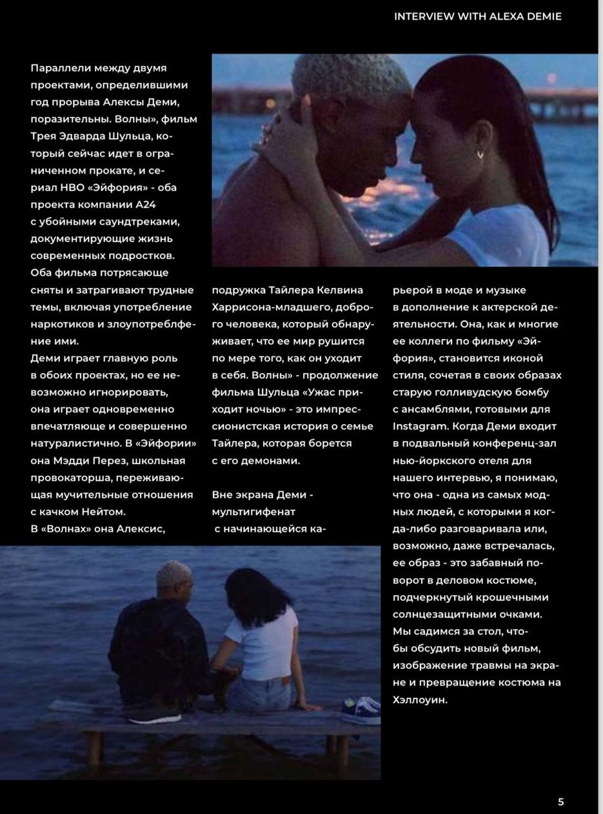
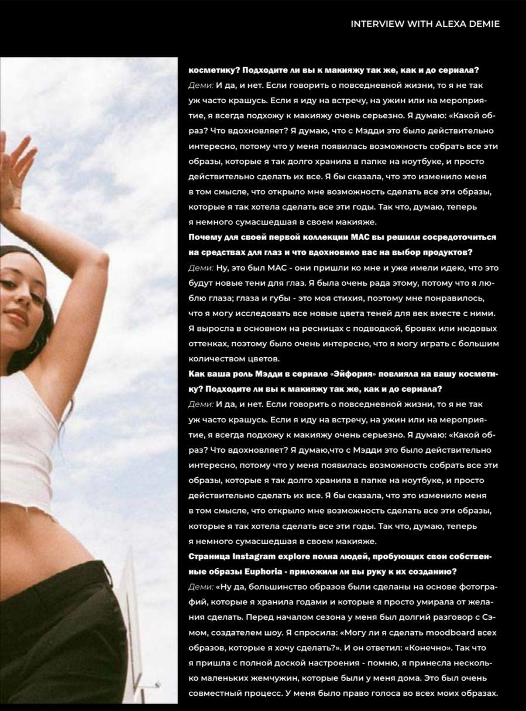

ПРОЕКТ ЖУРНАЛА «ВОЛНЫ ЭЙФОРИИ:АЛЕКСА ДЕМИ О СТИЛЕ»
Новый номер журнала "Волны эйфории" уже скоро выходит, и мы с нетерпением ждем погрузиться в мир стиля и красоты вместе с ним! На этот раз на обложке - непревзойденная Алекса Деми, звезда сериала "Эйфория"
Я уверена, что каждая фотосессия, каждая статья в этом номере журнала будут вдохновлять вас на создание своих собственных стильных образов. Перелистывая страницы "Волн эйфории", вы окунетесь в мир моды и красоты, который заставит вас влюбиться в стиль заново.


Не пропустите новый номер журнала "Волны эйфории" с Алексой Деми на обложке - он точно станет вашим источником вдохновения и стиля! Следите за обновлениями на моем сайте и не забудьте заглянуть в ближайшую киоск или магазин, чтобы приобрести свой экземпляр.